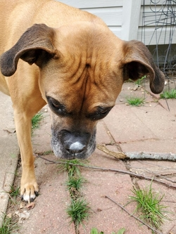
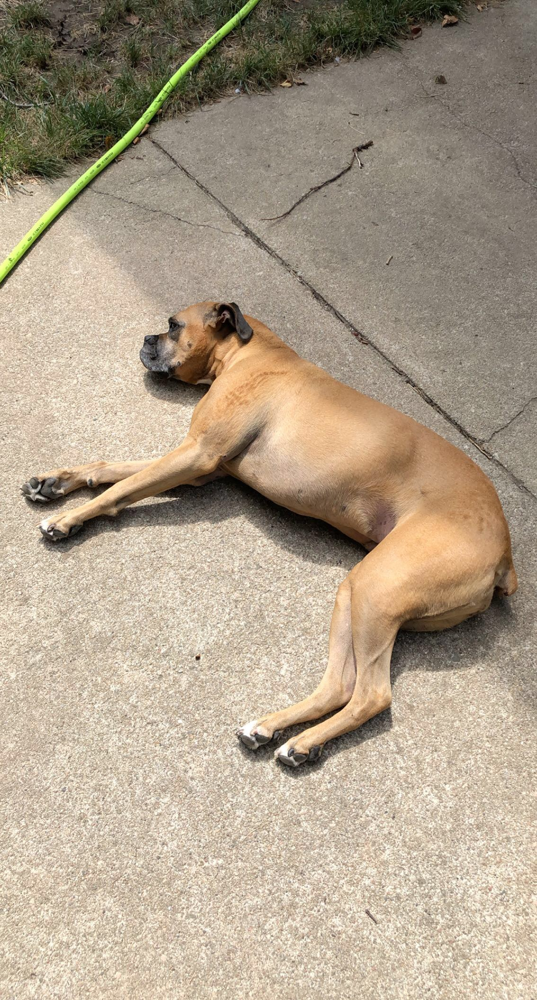
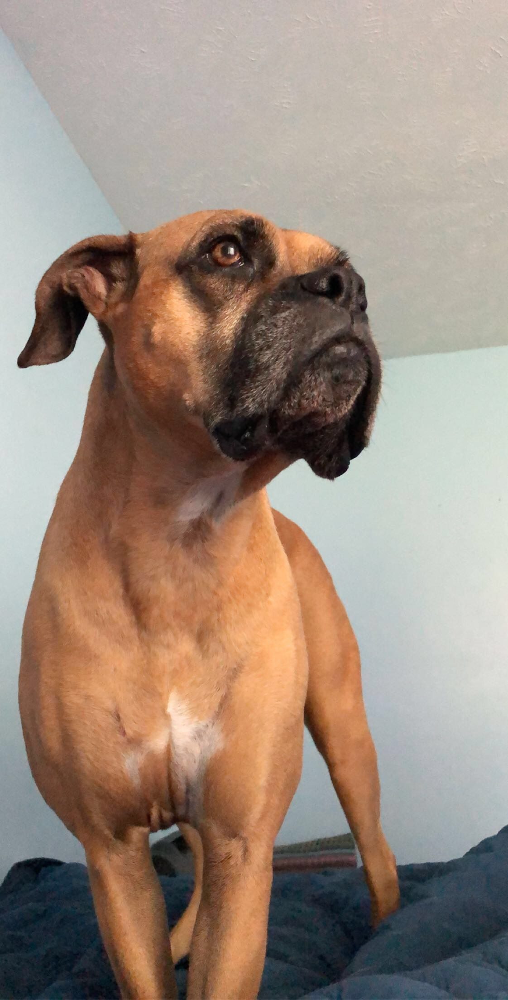
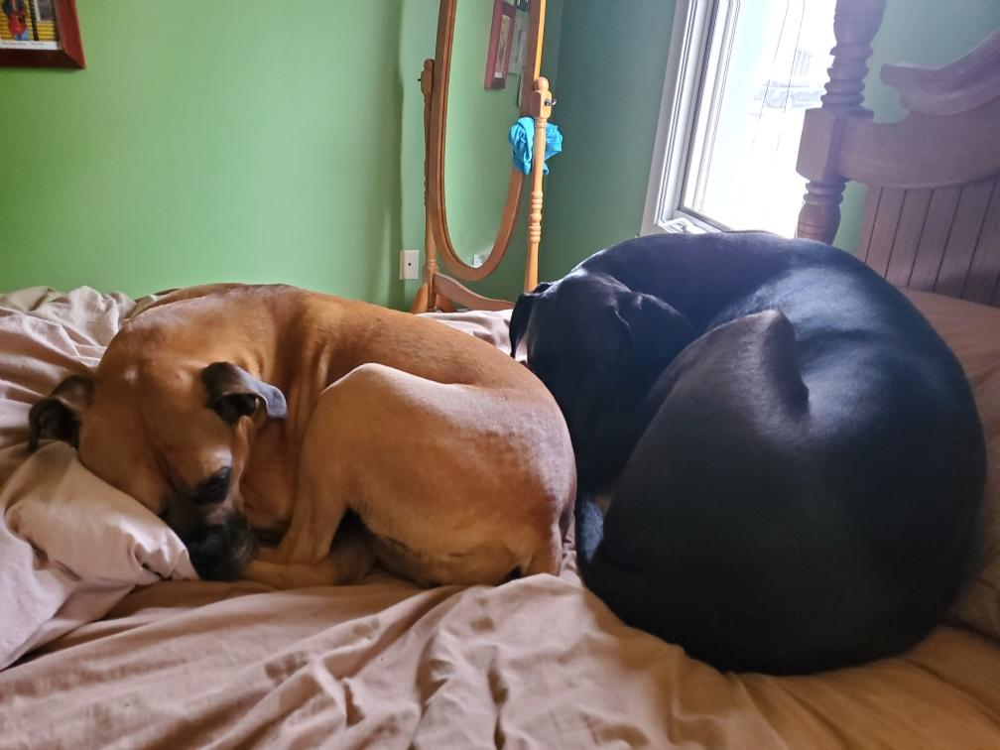
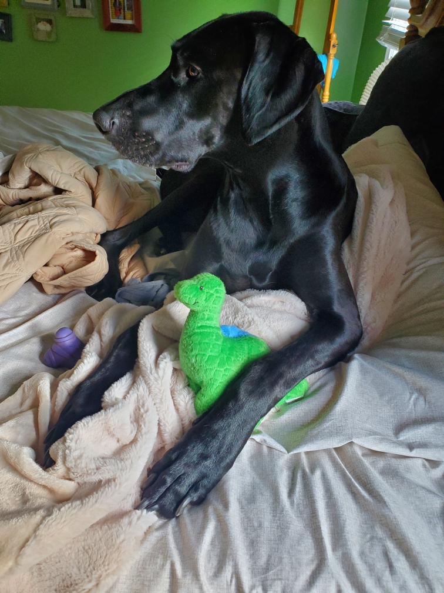
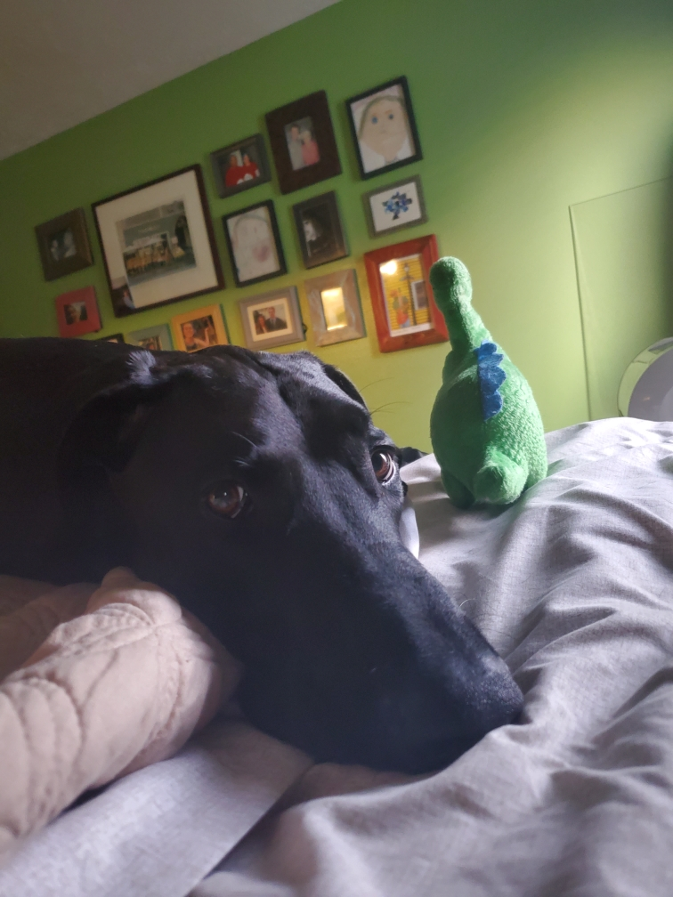

My name is Carson and I study MIS at UNO and some of my interests are learning programming, running, cooking, and video gaming. This webpage is dedicated to my two dogs, Mars and Juno. On this page I will share more about them including some photos, fun facts, and other things such as what treats they like.
     My family adopted both Juno and Mars when their owners couldn't keep them anymore. We got Juno when she was seven months old and we got Mars when he was seven weeks old.Juno is a boxer breed and Mars is a great dane and doberman mix. Juno is seven years old and her birthday is on January 1st. Mars turned four recently on September 4th, 2020.